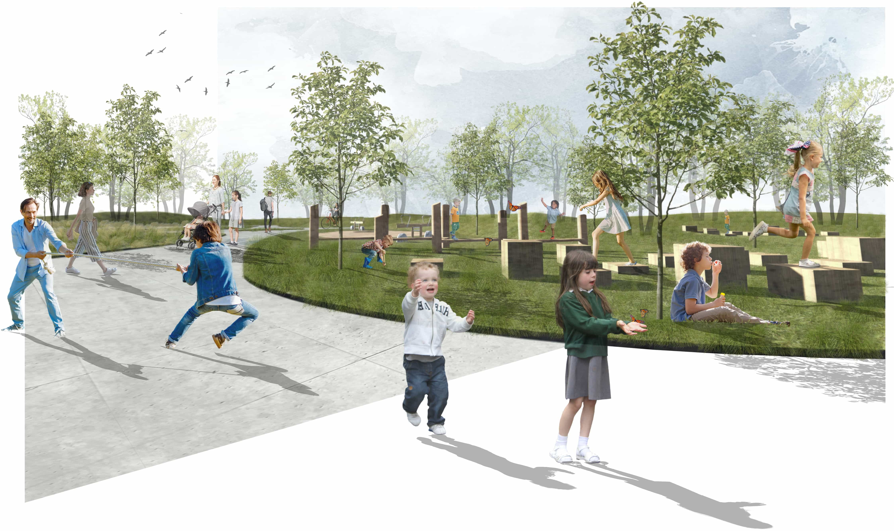
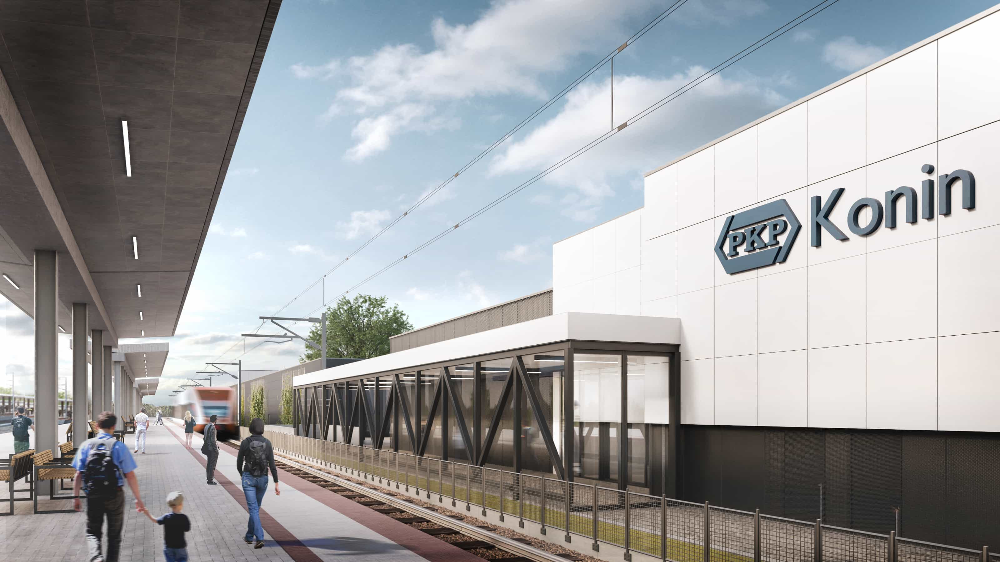
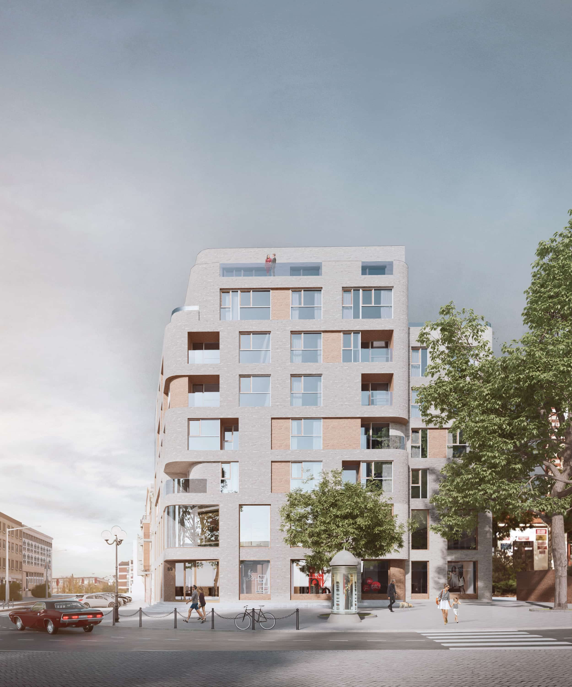
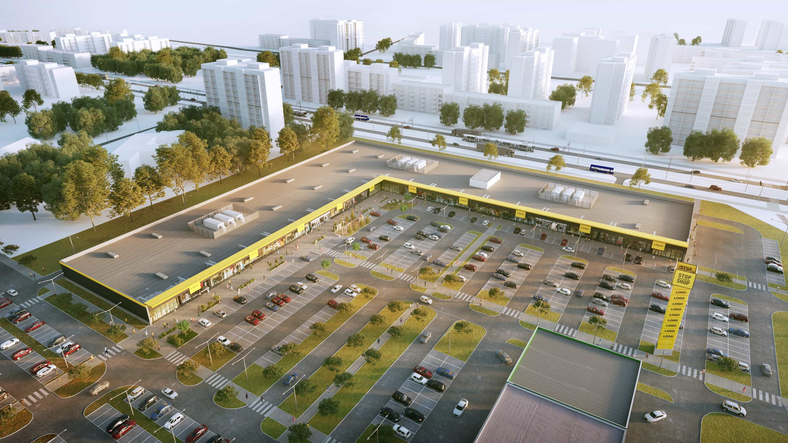
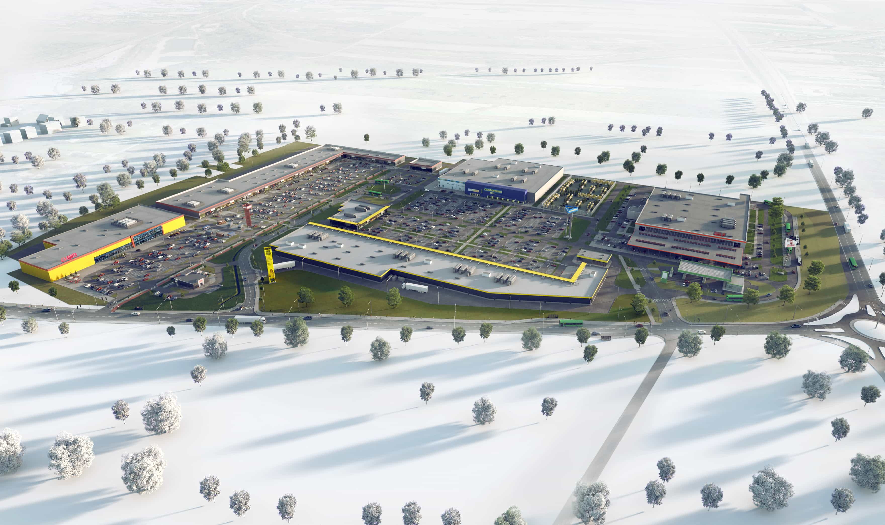
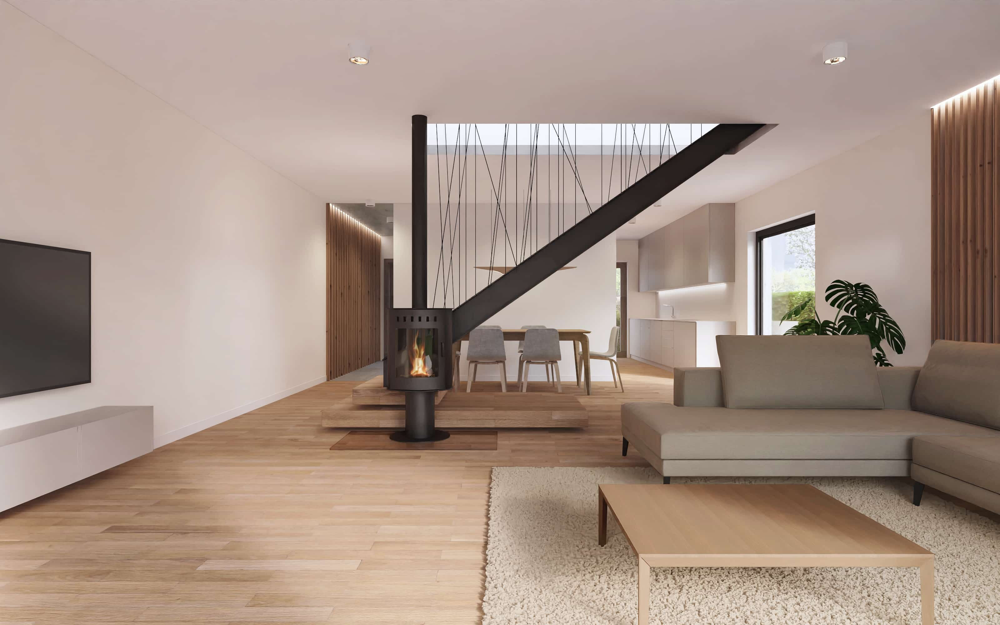

Nasza pracownia zapewnia całkowitą obsługę projektową jako projektant generalny w zakresie planowania urbanistycznego, architektonicznego, projektowania wnętrz oraz project–management’ u. Z naszej strony gwarantujemy wysoki standard wykonywanych usług opierając na technologi BIM wszystkie nasze projekty.
Our studio provides complete design services as a general designer in the field of urban planning, architectural, interior design and project-management. For our part, we guarantee a high standard of services, basing all our projects on the BIM technology.
Jakub Pawlak
Prezes Zarządu / President of the Board
W naszym biurze wykonaliśmy / In our office, we have performed
90
analiz chłonności / absorbency analyzes
25
projektów koncepcyjnych / conceptual designs
10
projektów budowlanych / permit projects
8
projektów wykonawczych / executive designs
Pracownicy / Employees
4
architektów prowadzących / leading architects
14
architektów / architects
4
pracowników administracyjnych / administrative employees
Wybrane prace wykonane w latach 2009-2022
Selected works performed in the years 2009-2022
galeria projektów
Retail Park | Poznań
Projekt koncepcyjny zespołu budynków dwukondygnacyjnych Retail Park o powierzchni użytkowej 21 296 m2 przy ul. Hetmańskiej w Poznaniu Conceptual design of a complex of two-story Retail Park buildings with a usable area of 21 296 m2 at Hetmańska Street in Poznań
Założenie miało również na celu stworzenie przestrzeni zielonych przeznaczonych do relaksu i integracji sąsiedzkich The assumption was also aimed at creating green spaces intended for relaxation and neighborhood integration

Zielony ciąg pieszy miał za zadanie zachęcić i wprowadzić kupujących w założenie Retail Park The purpose of the green pedestrian route was to encourage and introduce buyers to the Retail Park
Projekt Zintegrowanego Centrum Komunikacyjnego wraz z budynkiem handlowo-usługowym | Konin Design of an Integrated Communication Center with a commercial and service building | Konin
Projekt Zintegrowanego Centrum Komunikacyjnego wraz z budynkiem handlowo-usługowym o powierzchni użytkowej 9 267,3 m2 w Koninie Design of an Integrated Communication Center with a commercial and service building with a usable area of 9 267,3 m2 in Konin

Widok z peronu na projektowany budynek View from the platform on the designed building
Zespół zabudowy mieszkaniowej | Olsztyn Residential building complex | Olsztyn
Projekt zespołu budynków mieszkalnych z funkcją usługową w parterze o łącznej powierzchni użytkowej 13 650 m2 przy ul. Jagiellończyka w Olsztynie Project of a complex of residential buildings with a service function on the ground floor, total usable area 13 650 m2 , Jagiellończyka Street in Olsztyn
Budynek biurowo-magazynowy | Suchy las Office and warehouse building | Suchy las
Projekt koncepcyjny budynku biurowo-magazynowego o powierzchni użytkowej 3 120,4 m2 w Suchym Lesie Conceptual design of office and warehouse building with a usable area of 3 120,4 m2 in Suchy Las
Zespół zabudowy mieszkaniowej | Warszawa Residential building complex | Warszawa
Projekt zespołu budynków mieszkalnych z funkcją usługową w parterze o łącznej powierzchni użytkowej 87 649,6 m2 w Warszawie Project of a complex of residential buildings with a service function on the ground floor, total usable area 87 649,6 m2, Warszawa

Projekt zabudowy mieszkaniowej z funkcją usługową w parterze o łącznej powierzchni użytkowej 2 585 m2 przy ul. Dąbrowszczaków w Olsztynie Project of a residential buildings with a service function on the ground floor, total usable area 2 585 m2, Dąbrowszczaków Street in Olsztyn
Zabudowa mieszkaniowa | Olsztyn Residential building | Olsztyn
Retail Park | Gorzów Wielkopolski
Projekt koncepcyjny budynku Retail Park o powierzchni użytkowej 12 623 m2 w Gorzowie Wielkopolskim Conceptual design of a Retail Park building with a usable area of 12 623 m2 in Gorzów Wielkopolski

Widok z lotu ptaka na całe założenie View of the Retail Park
Projekt koncepcyjny budynku Retail Park o powierzchni użytkowej 17 678 m2 w Gorzowie Wielkopolskim Conceptual design of a Retail Park building with a usable area of 17 678 m2 in Gorzów Wielkopolski
Centrum logistyczne DHL | Port lotniczy | Belgrad DHL Logistics Center DHL | Airport | Belgrade
Projekt centrum przeładunkowego na porcie lotniczym w Belgradzie, którego powierzchnia użytkowana jest równa 5 140 m2 Project of a transhipment center at Belgrade airport with a usable area of 5 140 m2
Widok na projektowany budynek DHL oraz pas dla samolotów w odniesieniu do istniejącego budynku lotniska View of the designed DHL building and the aircraft runway in relation to the existing airport building
Projekt koncepcyjny zespołu budynków Retail Park o powierzchni użytkowej 8 222 m2 w Słupsku Conceptual design of a complex of Retail Park buildings with a usable area of 8 222 m2 in Słupsk

Projekt koncepcyjny zespołu budynków Retail Park o powierzchni użytkowej 22 679 m2 w Siedlcach Conceptual design of a complex of Retail Park buildings with a usable area of 22 679 m2 in Siedlce
Projekt koncepcyjny zespołu budynków Retail Park o powierzchni użytkowej 27 112,5 m2 ww Włocławku Conceptual design of a complex of Retail Park buildings with a usable area of 27 112,5 m2 in Włocławek
Projekt koncepcyjny zespołu budynków Retail Park wraz z zabudową mieszkaniową i rewitalizacją budynków zabytkowych o łącznej powierzchni użytkowej 44 300 m2 w Koszalinie Conceptual design of a complex of Retail Park buildings with residential buildings and revitalization of historic buildings with a total usable area of 44 300 m2 in Koszalin
Projekt koncepcyjny opierający się na rozbudowie zespołu budynków Retail Park o budynek usługowy o powierzchni użytkowej 13 150 m2 przy ul. Hetmańskiej w Poznaniu. Conceptual design based on the extension of the Retail Park building complex with a services building with a usable area of 13 150 m2 at Hetmańska Street in Poznań.
Przebudowa domu mieszkalnego | Warszawa Reconstruction of residential building | Warszawa
Projekt przebudowy domu jednorodzinnego wraz z zagospodarowaniem, projektem tarasu i basenu ogrodowego A single-family house reconstruction project with environment, design of the terrace and the garden pool
Projekt obejmował również dobudowanie części gospodarczej i wiaty samochodowej The project also included the addition of a bicycle room and a carport
Zabudowa mieszkaniowa | Złotniki Residential building | Złotniki
Projekt dwóch budynków mieszkalnych o łącznej powierzchni użytkowej 342,6 m2 w Złotnikach Project of two residential buildings with total usable area 342,6 m2 in Złotniki

Każdy z projektowanych segmentów jest 2-kondygnacyjny z antresolą, łączna powierzchnia użytkowa wynosi 146,1 m2 Each of the designed segments is 2-story with a mezzanine, the total usable area is 146,1 m2
Parter pełni funkcję dzienną, w której skład wchodzi hol wraz z pomieszczeniem gospodarczym i toaleta, przestronny salon wraz z kuchnią i spiżarnią. Cześć wyższa zawiera 3 sypialnie oraz 2 łazienki. Nad dwoma sypialniami, dla dzieci, znajduje się antresola The ground floor serves as a day space, which includes a hall with a utility room and a toilet, a spacious living room with a kitchen and a pantry. The upper part contains 3 bedrooms and 2 bathrooms. There is a mezzanine above the two bedrooms for children
Zabudowa mieszkaniowa | budynek modułowy Residential building | modular house
Projekt modułowego budynku mieszkalnego o łącznej powierzchni użytkowej 47,05 m2 Project of modular residential building with a total usable area 47,05 m2